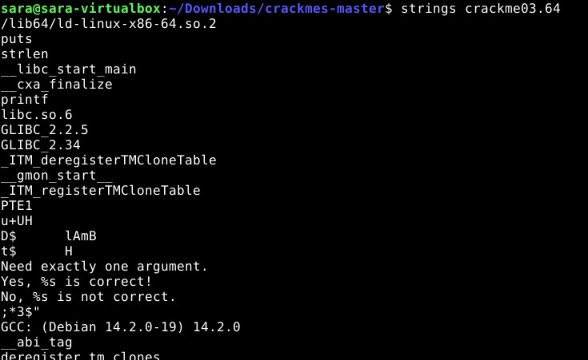
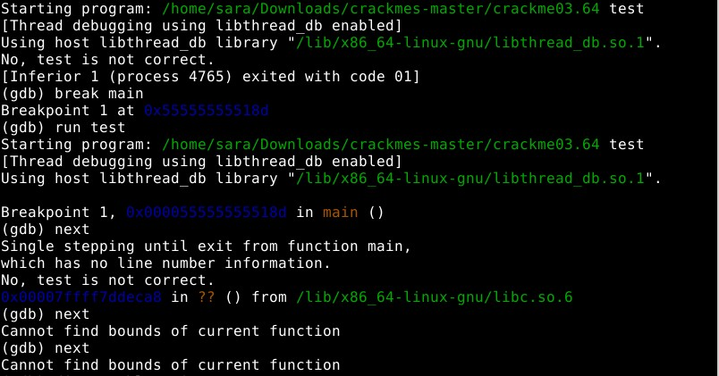
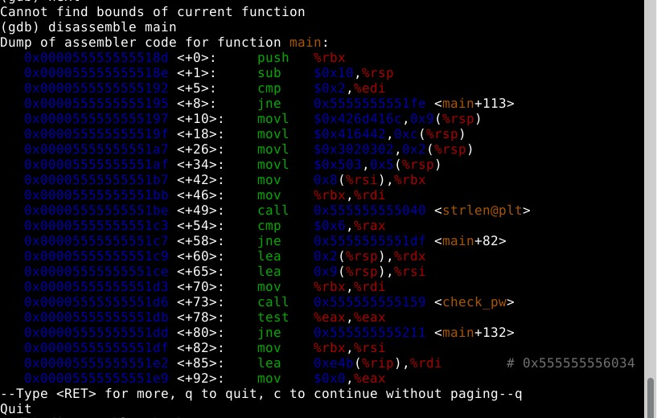
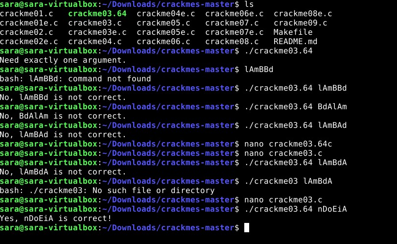

1
Latasin ensimmäiseksi tehtävän zip kansion ja purin sen kansion.

Kokeilin heti ajaa ohjelman ja se antoi minulle ilmoituksen "segmentation fault".

Segmentation fault virhe ilmenee kun ohjelmisto yrittää päästä käsiksi muistiin johon sillä ei ole oikeuksia.
Tämä tiedon luin "geeksforgeeks" sivulta.
Seuraavaksi käytin gdp ohjelmaa löytääkseni virheen.
Latasin ohjelman komennolla sudo apt install gdb. Seuraavaksi ajoin ohjelman uudestaan.
Annoin komennon "run" ja sillä komennolla ohjelma pysähtyi segmentation fault virheellä.
Seuraavaksi annoin komennon "backtrace" jotta itse ongelma kohta löytyisi.
Sain tämän näkymän:

Kuvasta näkyy virheen olevan rivillä 18, joka on main lohkossa.
Seuraavaksi avasin koodin nanolla:

Virhe on riveillä "char * bad message = NULL; ja print_scrambled(bad_message);
Koska vikana on se että "NULL" ei osoita minnekään, ratkaisin ongelman yksinkertaisesti poistamalla nuo rivit.
Tässä on korjattu versio, josta on poistettu virheelliset rivit.

2
Tässä tehtävässä latasin zip kansion ja purin sen unzip lab2.zip komennolla.
Kansiossa oli sama passtr tehtävä kuin aiemminkin oli, ratkaisin sen samalla strings komennolla kuin aiemminkin.
strings passtr

3
Aloitin lataamalla crackme tiedostot zip pakettina ja purin sen komennolla unzip.
Käytin komentoa make crackme03.c joka tuotti minulle ajettavan binäärin nimellä crackme03.64
Kokeilin heti strings komentoa, vaikka arvelinkin ettei tehtävä olisi niin helppo, eikä se ollutkaan:
Kokeilin seuraavaksi breakpointeja sekä käyttämällä next komentoa käydä binääriä läpi, jos salasana löytyisi niin.
Mikään näistä ei auttanut, kokeilin vielä purkaa tehtävää disassemble komennolla ja sain tällaisen näkymän, josta poimin movl heksadesimaalit.
Pyöritin näitä heksadesimaaleja netistä löytyvistä heksadesimaali stringiksi muuntimista läpi, sain erilaisia "lAmBda" vastauksia joita kokeilin.
Mikään näistä ei toiminut, joten lopulta nöyrryin ja katsoin lähdekoodin josta oikea salasana sitten löytyi. Se oli "nDoEiA".
Kaikki tehtävät on tehty Debian 13.0, "Trixie" Linux distrossa.
Lähteet
Geeksforgeeks https://www.geeksforgeeks.org/cpp/segmentation-fault-c-cpp/